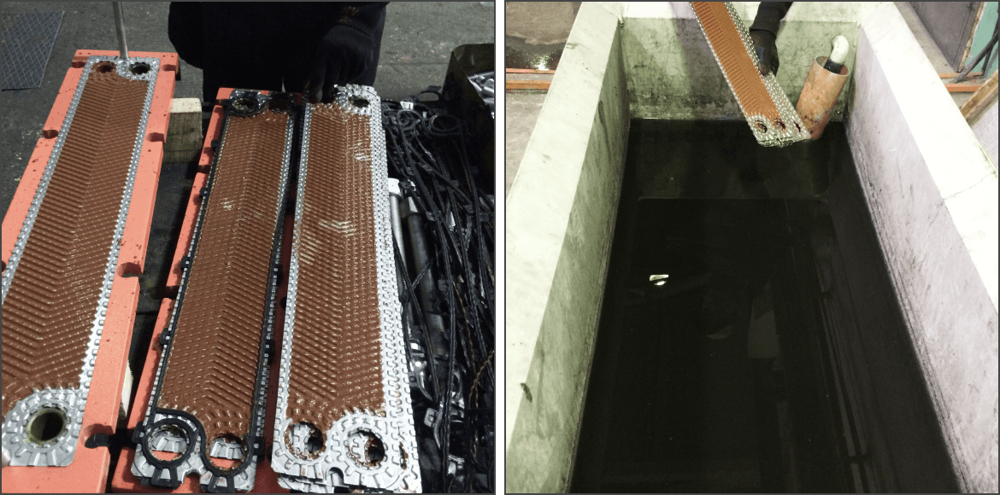
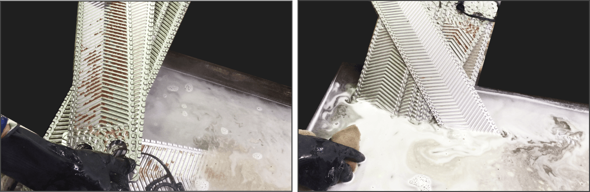

Возможные типы загрязнений теплообменника и способы их устранения
- Накипь – карбонат кальция, сульфат кальция, силикаты
- Биологическое загрязнение – ил, бактерии, одноклеточные
- Осадок – продукты коррозии, ил
Данные три типа загрязнения удаляется щеткой с мягкой щетиной под струей проточной воды либо
с помощью шланга с высоким напором воды.
В качестве реагентов для химической очистки пластин применять моющие средства: Чистюля-накипь, Дескалер М, ЕРП-1,
Силит-Калклосер. Возможна безразборная промывка.
В случае, если осадок с углеводородной основой мазут,
консистентные смазки удаляются щеткой с мягкой щетиной и растворителем на нефтяной основе. После растворения осадка,
пластину протереть ветошью. Для предотвращения разбухания резинового уплотнения не допускается ее контакт с
растворителем. После очистки, пластины промыть водой.
Разборная промывка пластинчатого теплообменника
- Убедиться, что пластинчатый теплообменник не находится под давлением, все трубопроводы отключены, теплообменник имеет температуру не выше 30°С.
- Смазать резьбовые части шпилек консистентной смазкой графитной или литолом-24 ГОСТ 21150. Ослабить стяжные шпильки, не допуская большого перекоса нажимной плиты. Не следует за один раз откручивать гайку более чем на 4…5 оборотов. Снять шпильки.
- После снятия всех стягивающих шпилек отодвинуть нажимную плиту к задней опоре и зафиксировать ее.
- Отклонить нижний край пластины пока не выйдет из зацепления с нижней стяжкой и вынуть ее, поворачивая к себе.
- Произвести гидродинамическую очистку поверхности пластин насосом высокого давления для бесконтактной мойки.
- Приготовить ванну с соответствующим раствором
Таблица - подготовка раствора для промывки теплообменника
| Наименование моющего средства |
Состав |
Рабочая концентрация моющего средства |
Рабочая температура раствора |
Соотношение р-р/ вода (в зависимости от загрязнения) |
| Чистюля-накипь |
Смесь неорганических кислот, ингибитор, комплексоны, деионизированная вода |
8-10% |
40-600С |
от 1:2 до 1:4 |
| Дескалер М |
Смесь органических и неорганических кислот, ингибиторов коррозии |
8-10% |
до 500С |
от 1:3 до 1:5 |
| ЕРП-1 |
Концентрированный раствор ортофосфорной кислоты, комплексоны |
8-13% |
40-500С |
от 1:3 до 1:5 |
| Силит-Калклосер |
Смесь кислот, ингибитор, комплексоны |
0,1 |
40-600С |
от 1:3 до 1:5 |

Ванна должна иметь антикоррозионное покрытие. К ванне должны быть подведены трубопроводы подачи воды. Осуществлен постоянный подогрев рабочего раствора.
Далее пластины погружаются в раствор при рекомендуемой температуре. В зависимости от типа и степени загрязнения, пластины могут находиться в растворе от 2 до 10 часов. После необходимо пластины промыть водой.

Безразборная промывка пластинчатого теплообменника
Пластинчатый разборный теплообменник удобен как раз тем, что возможно осуществить его
обслуживание с полной разборкой пакета пластин. Но иногда требуется промыть теплообменный аппарат, не разбирая
теплообменник. В этом случае порядок работы по промывке без разбора теплообменника следующий:
- Отключить теплообменник от сети водоснабжения. Закрыть запорные клапаны на теплообменнике,
и выпустить жидкость из теплообменника. Соединить теплобменный аппарат с промывочным насосом и устройством подогрева. Для
этого использовать соединительные гайки или переходные ниппели.
- Приготовить соответствующий раствор необходимой концентрации по таблице выше.
- Залить приготовленный раствор в резервуар. Подключить устройство к электрической сети.
Проверить устройство на предмет утечек. Включив насос, заполните промываемое оборудование раствором, при этом важно
следить за уровнем жидкости в баке и при необходимости останавливать насос и пополнять емкость раствором. После
заполнения оборудования моющим раствором, включить устройство подогрева.
- Обеспечить циркуляцию моющего раствора в теплообменнике. Периодически изменять направление
циркуляции моющего раствора на противоположное. Операцию следует проводить до полного удаления загрязнений.
- Промыть теплообменник водой.
Примечание: при работе промывочным насосом, руководствоваться инструкцией по эксплуатации промывочного насоса.